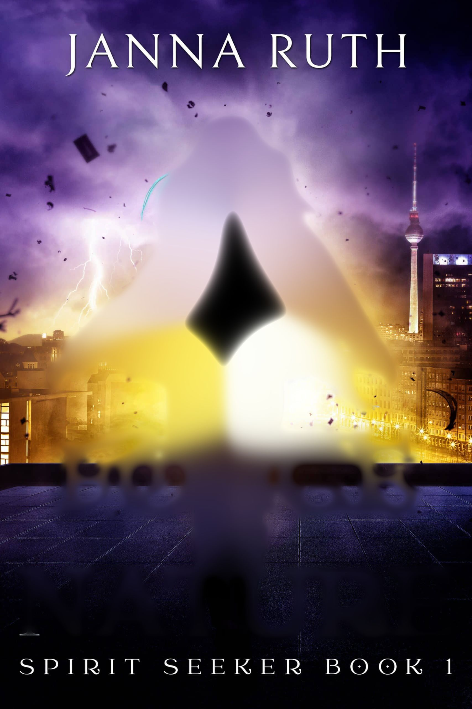
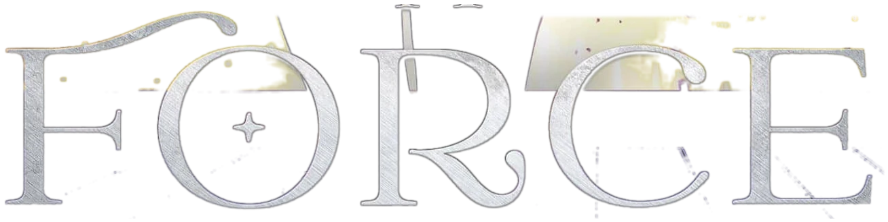
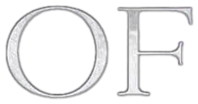
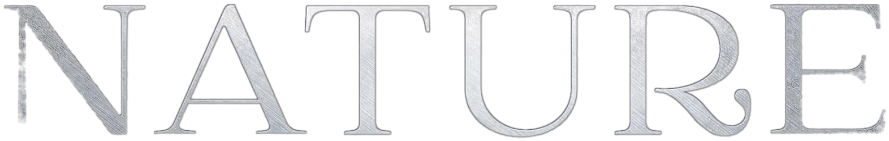
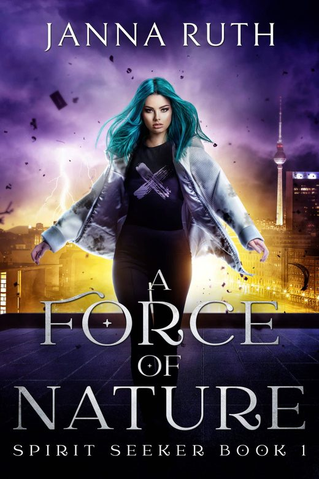
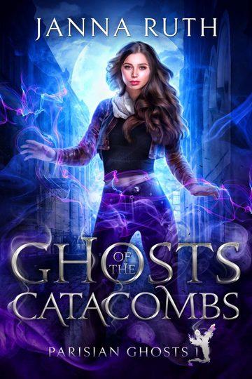
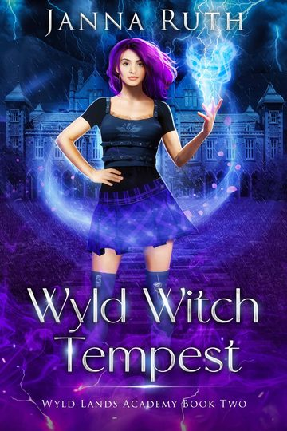
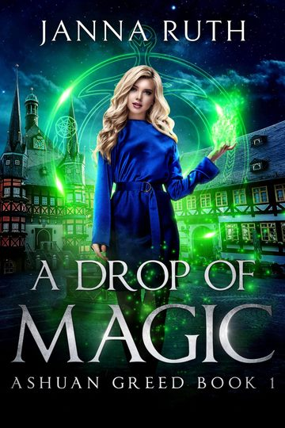
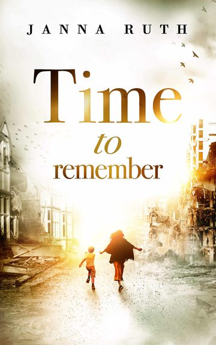

A Force of Nature
Spirit Seeker · Book 1
Rika can see nature spirits. That’s the trouble.
Coming to Kickstarter
All five Spirit Seeker books in one silver-foiled hardcover, with ten or more illustrations I drew myself.
Notify me



I’ve trusted nature spirits with my life, until the storm king decided I had to die.
A Force of Nature, Spirit Seeker book one
Five years of the Spirit Seekers
The illustrated deluxe hardcover
The Spirit Seekers were my first urban fantasy series in English. This year is their fifth anniversary, so what better way to celebrate than a fancy hardcover omnibus and a bucket load of illustrations, drawn by me.
- All five main books in one omnibus, about 1,100 pages
- Silver-foiled cover, sprayed edges, printed endpapers
- At least ten scene illustrations and five chapter illustrations, by me
- A green ribbon to mark your place
- An ebook omnibus with every illustration, too
RikaHomeless in Berlin for eight years, she gets along better with spirits than with people. A warm salamander in winter, a thorny dryad guarding her sleeping spot.
Wulf BachmannThe Spirit Seekers’ most celebrated commander. Even the spirits whisper his name in the winds.
AeolaThe sylph Rika pulled out of an icy river. A smell addict: coffee, pizza, flowers. The heart of the whole series.

Spirit Seeker
Elemental magic meets climate fiction: a Europe where every flood, storm and landslide is caused by nature spirits, and a war between spirits and humans.
Each book takes you somewhere new, so buckle up and book your tickets.
- A Force of Nature, book 1
- Natural Enemies, book 2
- Back to Nature, book 3
- Against Human Nature, book 4
- Natural Disaster, book 5
Urban fantasy across Europe
Befriend ghosts in Paris, fly with sylphs in Berlin, hunt monsters in Germany, and hatch salamanders in Rome.

Paris
Parisian Ghosts
I’m a ghost whisperer, not a catacomb crawler. But when you live in Paris, sometimes you end up being both. Now complete.
The series
Wyld Lands Academy
Wyld Witch Tempest
New: book two. Born with a volatile storm inside her chest, and the most notorious witch terrorist of modern times for a father.
Get it
Ashuan Greed
Ashuan
Magic, demons and high school drama, with the wit of Buffy and the magic of Charmed. Book three won the Sir Julius Vogel Award for Best YA Novel.
The series
Ōtautahi
Time to Remember
When the Canterbury earthquakes destroyed their city, Natalie and her friends were ten. Too old to forget, too young to be heard. Until now.
Find a copy
Janna Ruth
Once upon a time, I studied the plate boundaries of this world. Now I’m creating my own.
Born in Berlin, I now live in Wellington, or as I like to say, the other end of the world. I write, edit and publish in German and English, and I’ve translated more than seventy books into German. When I’m not writing, it’s aerial acrobatics, cake decorating and drawing.
And because I used to be a geologist, I check fantasy maps for rivers that flow uphill.
- WinnerSir Julius Vogel Award 2024, Best YA Novel, A Spring of Magic
- ShortlistSir Julius Vogel Award 2022, Best Novel, A Force of Nature
- WinnerSERAPH 2018, Best Independent Title
Signed paperbacks in Aotearoa
Met me at Armageddon in Auckland and missed a book? Signed paperbacks for readers in New Zealand.
Signed copies (NZ)